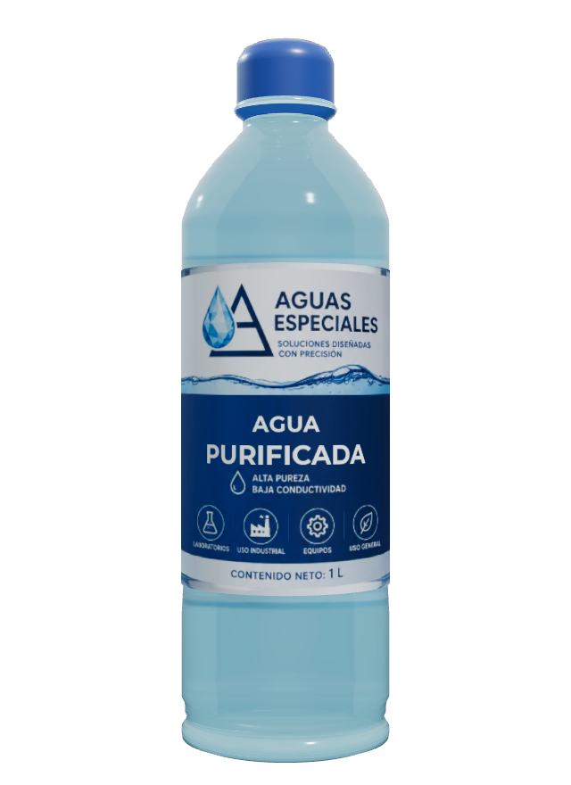

Agua purificada
Base confiable para procesos e higiene. Agua tratada mediante un proceso de purificación en varias etapas que remueve sólidos suspendidos, cloro, materia orgánica y carga microbiana. Es la base de uso general para procesos productivos, limpieza de equipos, formulación y consumo industrial, elaborada bajo condiciones controladas de higiene, calidad y seguridad.

Descripción del producto
Agua tratada mediante un proceso de purificación en varias etapas que remueve sólidos suspendidos, cloro, materia orgánica y carga microbiana. Es la base de uso general para procesos productivos, limpieza de equipos, formulación y consumo industrial, elaborada bajo condiciones controladas de higiene, calidad y seguridad.
Características y beneficios
- Elaborada bajo condiciones controladas de higiene y seguridad.
- Libre de cloro, sedimentos y carga microbiana.
- Calidad consistente lote a lote.
- Disponible en todas nuestras presentaciones.
- Parámetros ajustables a la especificación del cliente.
Aplicaciones
- Procesos productivos e industria en general.
- Alimentos y bebidas.
- Limpieza y enjuague de equipos.
- Formulación de productos.
- Cosméticos y cuidado personal.
- Servicios generales de planta.
Especificaciones
Especificaciones fisicoquímicas
Los parámetros pueden ajustarse a la especificación técnica que tu proceso requiera.
Proceso de producción
- Pretratamiento
- Filtración
- Pulido
- Agua purificada